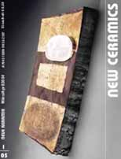
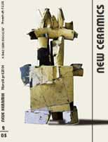
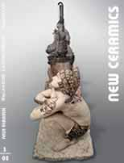
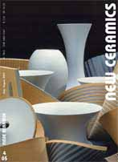
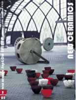

| New Ceramics
The German magazine Neue Keramik goes international

In January this year a quiet transformation took place. A new kid
arrived on the block. The German Magazine Neue Keramik launched
its new international, English language version New
Ceramics, as well as a fully English language complimentary
website.
Does the international ceramics community really need another English
language magazine, you might ask. Is it worth competing against
such heavy-weights as Ceramics Monthly (USA), Studio Ceramics (UK)
or Ceramics Art & Perception (Australia)?
New Ceramics introduces a fresh perspective into the world
of Anglo-Saxon ceramics magazines and literature. It not only offers
a European perspective, it offers a continental European
perspective. While offering a central European outlook, New Ceramics
is at the same time decidedly international. The German version
was already moving more in this direction.
Issue
1 (Jan/Feb 2005) featured artists portraits of such international
luminaries as Nino Caruso (Italy), Jiangshen Li (China) and Marta
Nagy (Hungary). Add to this reports on the 1st International Ceramic
Journal Editors' Symposium in China and the International Academy
of Ceramics General Assembly in Korea in 2004, plus exhibition reports
from around the world and you have an interesting mix. Add to this
the German perspective with a fascinating series on historical stoneware
from the Rhineland region and an equally interesting article on
Anagama firing at the Institute of Ceramics & Glass in the ceramics
center of Höhr-Grenzhausen. Some of these names and terms may
be familiar to you. If they're not, you've got even more to learn
and discover. Reading these articles will broaden your horizon and
may give new inspiration, if you are a maker.
Issue
2 (March/April 2005) featured artists Shao-Ting Ju (Taiwan),
Rene Reichenbach (Germany), Sidsel Hamun (Norway) and others. A
highlight of this issue was a transcript of a talk by American ceramist
Gerry Williams on the goal of ceramic journals and their influence
on the field, as well as a report on Picasso's ceramics and another
on Turkish faience motifs.
Issue
3 (May/June 2005) again has that international perspective
- featured artists included Yikyung Kim (Korea), Prezemyslaw Lasak
(Poland), Nan Beyer (Finland) and Gabriele Koch (UK/Germany). An
article by Jane Perryman focused on the over life-size Aiyanaar
horses of Tamil Nadu, which was of particular interest, as Ceramics
Today also featured an article on the same topic by Ron Du Bois
around the same time.

Issue
4 (June/July 2005) features my favorite cover: a cropped
detail of works by German ceramists Rita Ternes and Thomas Naethe.
This issue features Vietnamese ceramist Dao Droste, German ceramist
Kyra Spieker and others. In the 'Forum' section, Garth Clarks presents
a paper on Ceramic History and the Avant-Garde (an excerpt
from his 'must-have' anthology of writing Shards). The exhibition
section features reports on NCECA Bltimore, the Richard Bampi Prize
(a major German ceramics prize) and a report on masterpieces of
Japanese pottery in a major German collection (including Koie Ryoji,
Tsujimura Shiro etc.).
The
current Issue
5 features portraits of Frenchman Franck Rousseaux, Irish
potter Claire Curneen, Dutchman Mels Boom and Petra Bittl, who was
recently awarded the State Prize for Crafts From North-Rhine Westphalia,
Germany. The 'Forum' includes an intriguing article on Einstein
and Ceramics, by former editor Gustav Weiss, while the 'Exhibitions'
section covers the 3rd World Ceramic Biennale 2005 in Korea and
Ceramic Art London 2005.
By launching an English version of the German magazine Neue
Keramik, Bernd Pfannkuche has taken a bold step. It's a gamble,
but one I hope will pay off. Today's world is becoming increasingly
borderless and international. We see the Australian ceramics magazine
being distributed in the USA, the Greek magazine also publishing
in English (offering however a totally different perspective) and
any number of online resources reaching out to an international
audience.
New Ceramics has a place in this scheme of things and I
am confident it will carve out a niche for itself in the world of
English language magazines. Not in competition, but complimentary.
If you still have doubts, give it a go. You won't be disappointed.
More Articles |